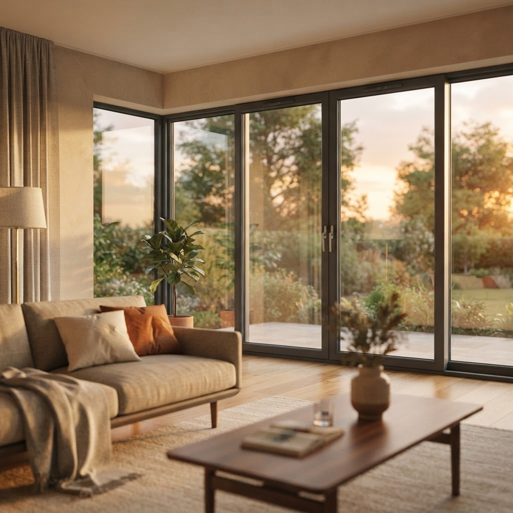

Детский замок на окно в Северном округе — что важно знать

Содержание
Северный район Москвы активно застраивается, и вопросы безопасности жилья становятся здесь особенно актуальными для молодых семей. Мы устанавливаем надежные ограничители на окна, помогая родителям защитить детей от выпадения и обеспечить спокойствие в каждой квартире.
Можно ли установить замок на старое пластиковое окно?
Да, установка возможна на окна любого возраста, если профиль сохранил свою геометрию и не разрушен. Мы проводим диагностику состояния рамы перед монтажом, чтобы гарантировать надежную фиксацию фурнитуры.
Что дальше?
Запишитесь на бесплатный замер: наш мастер приедет, рассчитает стоимость на месте и зафиксирует итоговую цену в договоре.
Детский замок на окно в Северном округе — что важно знать
Жительница Северного района задала вопрос: как выбрать устройство, которое действительно удержит створку? Мой ответ как мастера: надежность зависит не от цены, а от качества металла и правильности монтажа. Детский замок на окно в Северном округе — что важно знать каждому родителю: выбирайте модели из стали, а не из пластика. Силуминовые детали быстро ломаются под нагрузкой, поэтому мы используем только прочные металлические блокираторы с ключом или тросиком. Важно проверить, чтобы механизм жестко фиксировал створку в режиме проветривания, не позволяя ей открыться полностью. Мы всегда проверяем прижим уплотнителя после установки, чтобы окно не продувало зимой. Качество заключается в точности сверления и использовании надежных саморезов, которые не разболтаются со временем. Если рама алюминиевая или деревянная, подбираем специальные крепежи, исключающие люфт. При установке мы обязательно проводим инструктаж, показывая, как корректно запирать механизм, чтобы он служил годами без заеданий.
Какие типы замков считаются самыми надежными
На рынке много вариантов, но я выделяю два основных типа для квартир. Первый — это накладной замок с ключом, который ставится в нижней части створки. Он блокирует поворотную функцию, позволяя окну только откидываться. Это максимально безопасный вариант, так как ключ всегда находится у взрослого. Второй тип — гибкий трос. Его преимущество в возможности регулировать ширину открытия створки для проветривания. При этом важно, чтобы трос имел усиленную конструкцию и был защищен от перекусывания. Мы устанавливаем эти элементы так, чтобы они не деформировали профиль и не портили внешний вид окна. При выборе обратите внимание на ход ключа: он должен быть плавным, без рывков. Если механизм заедает при покупке, это признак низкого качества отливки металла. Наши мастера тщательно подбирают ответные планки под конкретную марку вашего оконного профиля. Качественный монтаж подразумевает, что замок становится единым целым с конструкцией окна, обеспечивая максимальную защиту для вашего ребенка.
Бесплатный замер
Оставьте заявку сегодня — приедем в удобное время, посчитаем смету и закрепим цену в договоре.
Окна для вашего дома